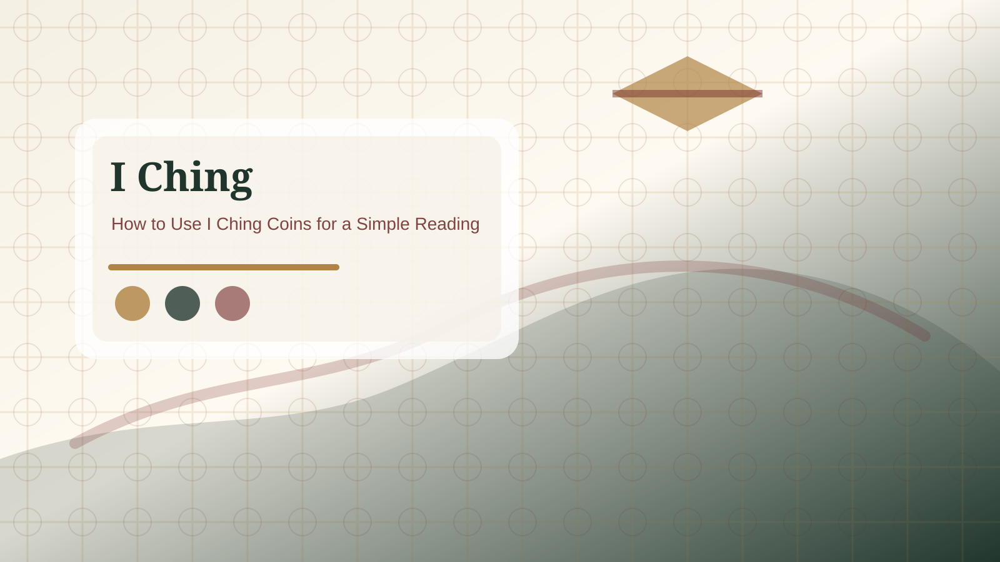

Casting guide
Casting guideHow to Use I Ching Coins for a Simple Reading
A coin reading turns a clear question into six lines. The value is not in surrendering judgment, but in slowing down enough to see the situation clearly.
Before you cast
Start by writing one specific question. A useful question is open enough to invite reflection but narrow enough to connect with a real situation. For example, ask what needs attention in a work decision, what kind of response fits a relationship problem, or what should be checked before committing time or money. Avoid asking several unrelated questions in one cast.
Good preparation also means accepting that the reading is not a command. The I Ching can help you notice timing, pressure, return, conflict, support, or restraint. It cannot remove responsibility, guarantee an outcome, or replace professional advice.

Cast six lines from bottom to top
Traditional coin methods build the hexagram one line at a time. The first line you record is the bottom line. The sixth line is the top line. This matters because many beginners naturally want to read from top to bottom, but the hexagram is constructed from the ground upward.
If you are using three coins, each toss creates one line. Record whether the line is solid or broken and whether it is changing. A stable yang line is solid. A stable yin line is broken. A changing yang or changing yin line means that part of the pattern is active and will help form the relating hexagram.
Read the result in layers
First, read the primary hexagram. This names the current pattern around the question. Second, read the changing lines. These are the active pressure points where the situation may need adjustment. Third, read the relating hexagram. This shows the possible direction created when changing lines move.
Do not treat each layer as a separate fortune. The layers belong to the same question. A careful reading asks how the primary situation, changing pressure, and possible direction connect.
After the reading
Write down one practical next step. The step should be small enough to test. It might be a conversation, a delay, a boundary, a repair, a fact check, or a decision to stop pushing. If the answer makes you more anxious, return to the question and ask whether you were looking for certainty instead of clarity.
Coin casting process
Use three similar coins and decide before the first toss which side counts as yang and which side counts as yin. Many readers use heads as 3 and tails as 2, but the exact convention matters less than keeping it consistent for all six throws. Toss once for the first line, record the total, then build the remaining lines upward until the sixth line is complete.
The four totals create four line types. Six is old yin, a broken line that changes. Seven is young yang, a stable solid line. Eight is young yin, a stable broken line. Nine is old yang, a solid line that changes. Recording the number beside each line prevents a common beginner problem: remembering the shape but forgetting which lines were active.
Common casting mistakes
The most common mistake is reading from the top down. The second is refreshing or recasting immediately because the first result feels uncomfortable. The third is treating a coin method as if it removes responsibility. The coins create a structured pattern; the reader still has to connect that pattern to facts, timing, and behavior.
Another mistake is skipping the record. A good reading note includes the exact question, the six totals, the primary hexagram, any changing lines, and the relating hexagram. This lets you review the reading later without reshaping it around memory or mood.
After the six throws
Read the primary hexagram first, then mark only the lines that changed. If there are no changing lines, stay with the primary hexagram and avoid forcing a second pattern. If one or more lines changed, use those lines to see where the situation is active. The relating hexagram is useful only after the primary pattern and changing lines are understood.
For practical use, end with one small action connected to the question. That action might be to wait for a missing fact, ask a clearer question in a conversation, pause a purchase, repair a neglected detail, or stop pushing a situation that needs time.